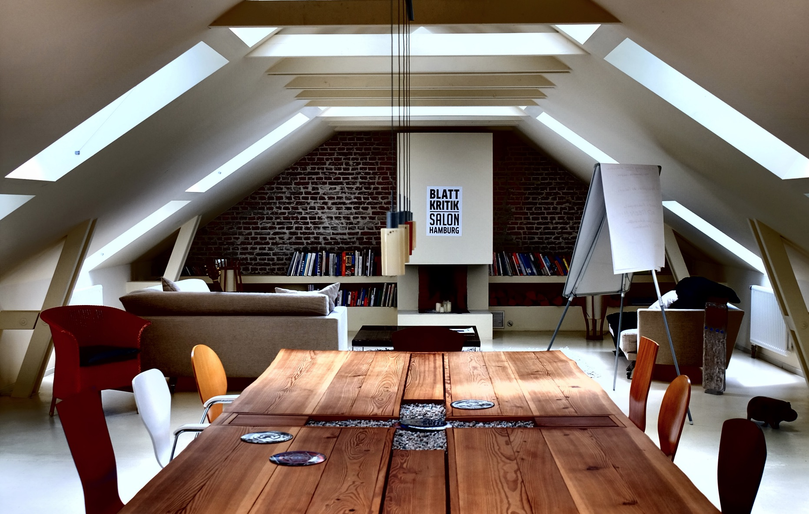

Hopp und Frenz
X
Hopp und Frenz
About
Wie alles begann
Doch eins nach dem anderen. Alles beginnt mit dem jungen Michael Hopp, der 1982 Chefredakteur des ersten Zeitgeist-Magazins überhaupt wird – dem Wiener. 1985 siedelt er von Österreich nach Deutschland über und arbeitet als Autor für Titel wie Tempo, Playboy, Bild und Bunte. Er wird Chefredakteur für Magazine wie Cash Flow, Männer Vogue, TV Movie, TV Total und TV Today und gründet den Tiger Press Verlag, um Fix & Foxi neu aufzulegen.
Hopp trifft Frenz
Irgendwann zu dieser Zeit lernt Michael Hopp die Bildredakteurin Elisabeth Frenz kennen. Die beiden gründen in Hamburg eine Familie – und ein Unternehmen: 2009 startet das Hopp und Frenz Redaktionsbüro. Im Auftrag von Hoffmann und Campe Corporate Publishing setzt das Büro erste Projekte für Kunden wie Evonik und RWE um, 2013 bindet der Verlag das Redaktionsbüro exklusiv an sich. Hopp und Frenz betreut fortan Schlüsselkunden wie United Grinding, ZF Friedrichshafen und die Messe Frankfurt.
Ein neues Haus
Das Team aus Redakteuren wächst kontinuierlich und so bedarf es 2013 schließlich eines größeren Büros. Hopp und Frenz zieht von der privaten Wohnküche in einen grünen Hinterhof in direkter Nähe zur Sternschanze. 2017 macht sich Hopp und Frenz vollständig unabhängig, es ziehen weitere Redakteure, ein Online Marketer und ein Art Direktor ein. Aus dem Redaktionsbüro wird das Hopp und Frenz Content House. Wurde auch Zeit. Schließlich haben wir schon seit Jahren Content auf allen Kanäle gemacht.
